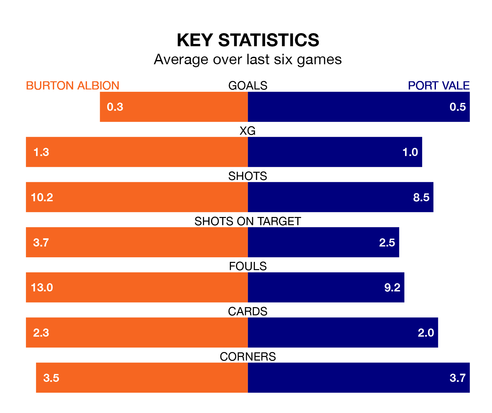

Burton Albion and Port Vale both come into Saturday's kick-off at the Pirelli Stadium in terrible form, having picked up one and two points respectively in their last six games.
The Brewers have drawn just one of the last six, while the Valiants have taken two draws and four losses.
Vale are 23rd in the table after 37 games, of which they have won eight and drawn nine, earning 33 points.
Burton are four places ahead of the Valiants in 19th, with 10 wins and nine draws putting them on 39 points.
In the last 10 years, Burton and Vale have played each other on 10 occasions. Burton won five of them, Vale four, and they drew once.
On average, the Brewers scored 1.5 goals and the Valiants 1.2 in those matches.
Their last meeting was on November 14, when Vale won 2-0 away.
With 31 goals in 38 games so far this season, Albion are the league's third-lowest scorers with 0.8 goals per game. And they are conceding at an average rate, letting in 50 goals at a rate of 1.3 per game.
The visitors are also below average scorers, with 0.9 goals per game, compared to a league average of 1.3. They have conceded 1.6 goals per game.
Burton's last match was on March 16, a 1-0 loss against Exeter City.
Vale lost 2-0 against Oxford United last time out, also on March 16.
Saturday's match will be refereed by David Rock, who has taken charge of 13 EFL League One games so far this season, issuing five red cards and booking 54 players. He has awarded two penalties.
The last Burton game Rock refereed was a 1-1 home draw with Wycombe Wanderers on January 6. His last Vale match was their 7-0 loss away at Barnsley on August 5.
Updated: 10:19 (UTC), 22/03/24